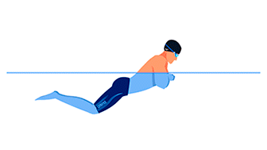

Los estilos de natación son las diferentes técnicas que utilizamos para desplazarnos en el agua. Cada estilo tiene sus propias características y movimientos, lo que los hace únicos y desafiantes. En las competiciones oficiales, se reconocen cuatro estilos principales:
Estilo Crol
El crol es el estilo de natación más rápido y común. Se caracteriza por un movimiento alternado de los brazos, similar a las aspas de un molino, y una patada constante. El nadador se desplaza boca abajo, respirando lateralmente. Su eficiencia y comodidad lo hacen el favorito de muchos nadadores.

Estilo Pecho
El estilo pecho es el más antiguo de la natación y se caracteriza por movimientos simultáneos de brazos y piernas. El nadador se desplaza boca abajo, realizando un movimiento de "abrazo" con los brazos y una patada de rana. A diferencia de otros estilos, en el pecho tanto los brazos como las piernas contribuyen por igual a la propulsión. Aunque es el estilo más lento, requiere una gran coordinación y fuerza, especialmente en las piernas.
Estilo Mariposa
El estilo mariposa es el más reciente y técnico de los estilos de natación. Evolucionó a partir de la braza y se caracteriza por un movimiento ondulatorio del cuerpo, similar al de un delfín. Los brazos y las piernas se mueven de forma simultánea y coordinada, demandando gran fuerza y flexibilidad. La patada de delfín, característica de este estilo, proporciona una gran propulsión. La coordinación entre la ondulación del cuerpo, los brazos y las piernas es esencial para una ejecución eficaz
Estilo Espalda
El estilo espalda es el tercero más rápido y se caracteriza por nadar boca arriba. Sus movimientos son similares al crol, pero invertidos. Los brazos se mueven de forma alterna y la patada es similar a la del crol, aunque se conoce como batida dorsal. Este estilo es especialmente recomendado para personas con problemas de espalda, ya que fortalece la zona y mejora la postura.